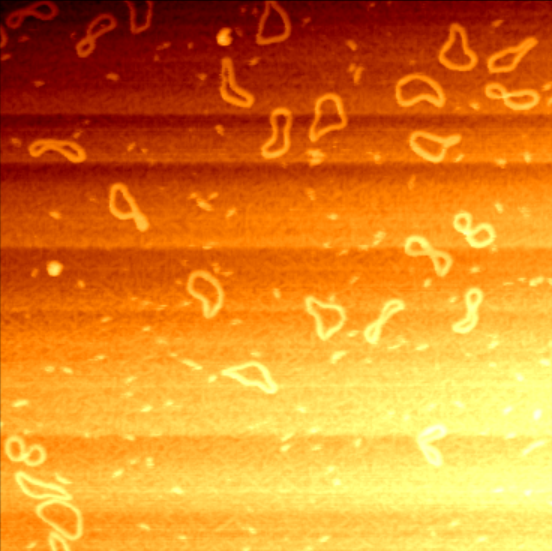
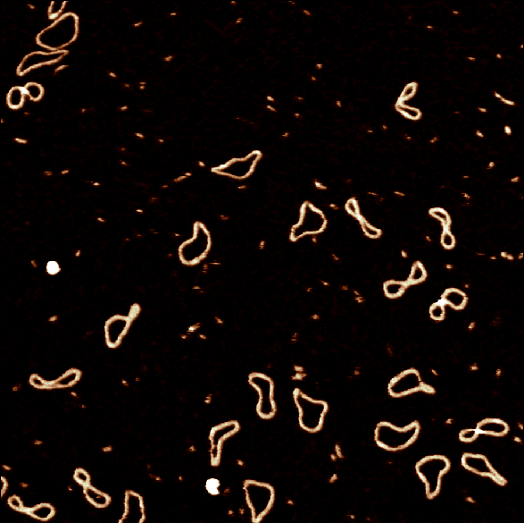
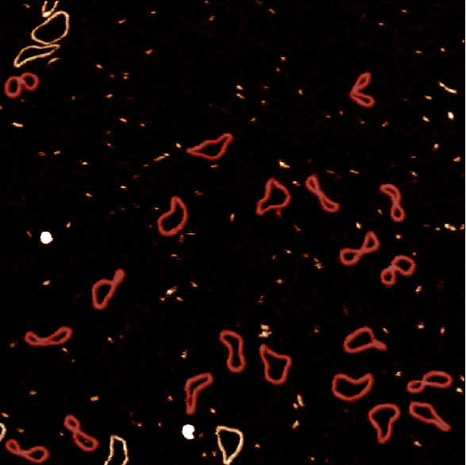
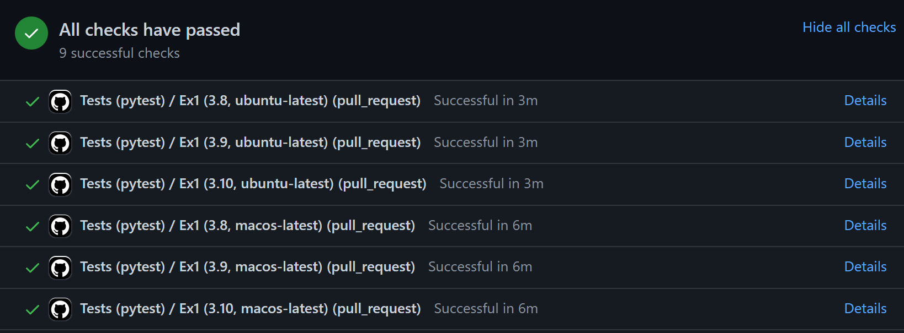
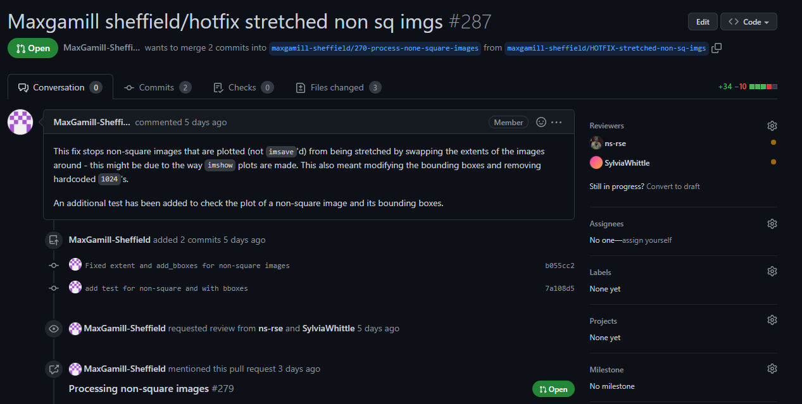
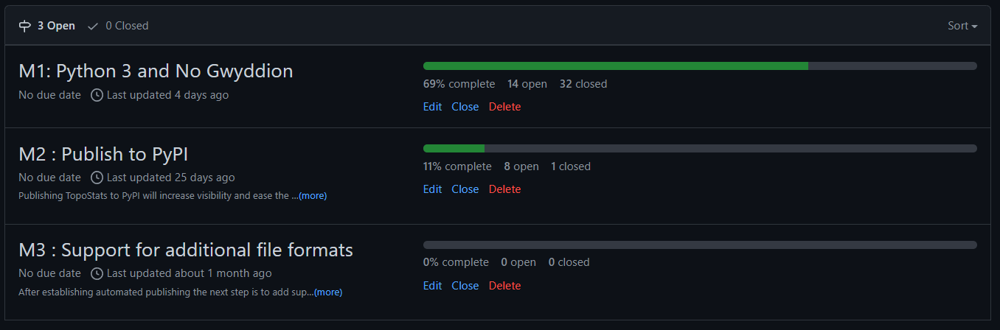
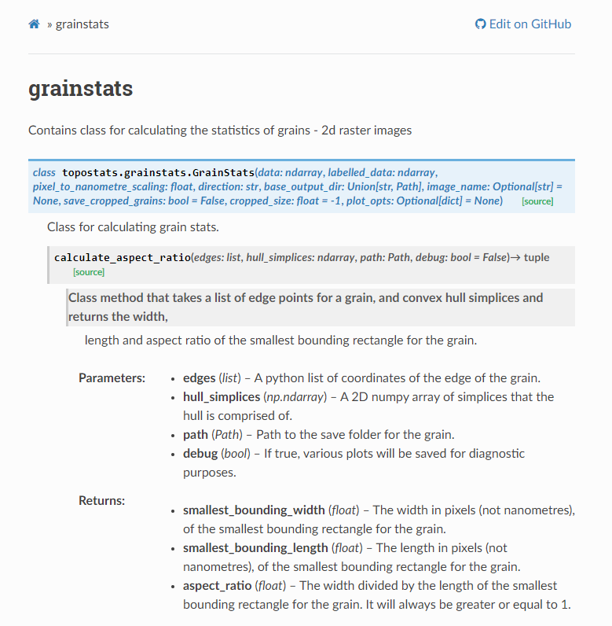

Sylvia Whittle



TopoStats is a python toolkit for the automated processing and analysis of Atomic Foce Microscopy (AFM) data. It takes noisy, non flat images that come from the atomic force microscope, flattens them, removes the background noise and detects structures in the data such as the DNA minicircles in the example above.
This meant that working on TopoStats was confusing, difficult and prone to errors and lost data / scripts.
We added configuration file which allows users to change parameters within the code without having to open up the code and add / comment out lines. This also means that there were no code conflicts between users’ installations where previously changes would get forgotten about and lost.
[MainSection]
; file path - the directory where the files are
path = ./
; set the sample type here. Please note that this is case sensitive.
sample_type = DNA
; set the file type to look for
fileend = .spm,.gwy,*.[0-9]
filetype = *.[0-9]
; set the extension of exported files
extension = .tiff
; set height scale values
minheightscale = -0e-9
maxheightscale = 3e-9
; set the size of the cropped window / 2 in pixels
cropwidth = 40e-9
splitwidth = 2e-6
; set the number of bins
bins = 25
; set the value of different valriables, based on the type of the sample.
; minarea is the minimum size for grain determination
; maxdeviation and mindeviation are the allowable deviations from the median pixel size for removal of large and small objects
[DNA]
minarea = 300e-9
maxdeviation = 1.3
mindeviation = 0.7
gaussian = 0.1e-9
thresholdingcriteria = 0.75
[PROTEIN]
minarea = 50e-9
maxdeviation = 2.0
mindeviation = 0.3
gaussian = 0.1e-9
thresholdingcriteria = 0.5
[MAC]
minarea = 1000e-9
maxdeviation = 1.5
mindeviation = 0.5
gaussian = 0.25e-09
thresholdingcriteria = 2.1
[ImageOutput]
; Turn saving figures on and off. 1 : on, 0 : off
saveTraceFigures_option = 1
; Turn saving cropped figures on and off. 1 : on, 0 : off
saveCroppedFigures_option = 0
; Save file scale option: 0 : none, 1 : ruler, 2 : inset scale bar
savefilesScale_option = 1
; Save file name for output colour scale eg: Nanoscope.txt
savefile_zscalecolour = Nanoscope.txt
; Turn on and off the z bar. 1 : on, 0 : off
zbar_option = 1We developed a method for installation that was guaranteed to work on almost any system using Docker containers.
Docker containers are perfect for creating a reproducable and hardware agnostic solution to running this fragile and finnicky software on anyone’s computer.
This solved many issues with the installation procedure, at the cost of adding a bit of difficulty with installing and running docker containers. Some users found the language and processes for running Docker containers intimidating.
The docker solution was good, but it didn’t solve the bigger issue, Python 2.7.
We decided to develop a new version of the software from scratch, without the Gwyddion dependency. This enabled us to develop the software in Python 3.X, with documentation that we would wrote alongside development. It also enabled us to understand every bit of the codebase - there was no longer a black box in our project.
Over the next few months, we slowly developed a Minimum Viable Product version of TopoStats that could do everything that we used the old version for.
As we developed the new version of TopoStats, we made sure to add tests for as many files, classes and scripts as we could.
We then added automated testing with GitHub, to ensure that any pull request that is made passes all of the repository’s tests. This has proven immensely useful and has caught errors that we would not have noticed until months down the line.
Contribution is made usng GitHub’s Pull Requests. A pull request requies at least one approving review before being merged. This has also proven invaluable.
We have standardised our coding style somewhat, with a recommended formatter, Black, and linter, Pylint. The repository also comes with configuration files for the formatter and linter so that we are all developing the code with roughly the same style and conventions.
Code can be written in lots of different ways, some of which are harder to read than others. By establishing a style and making this more consistent on our project, it makes it easier for a wider group of people to understand and work on.
We updated our page on GitHub, adding links to the documentation, contributing guidelines and a set of comprehensive installation instructions.
GitHub issues and milestones were used to document every planned feature, ensuring that it was open to everybody as opposed to being kept within meetings and private messages. This had the knock-on effect of making ourselves more organised and allowed for more insightful planning. 
Documentation is now written alongside the code in the form of docstrings. We aim for every function, class and file to have docstrings that describe in detail what they do, what parameters they take and what they return. So far, this has gone splendidly and has greatly reduced the amount of questions that need to be asked of each other’s code. It also reduces the amount of time spent on code review.
The documentation is hosted automatically on ReadTheDocs using the Sphinx documentation generator.
